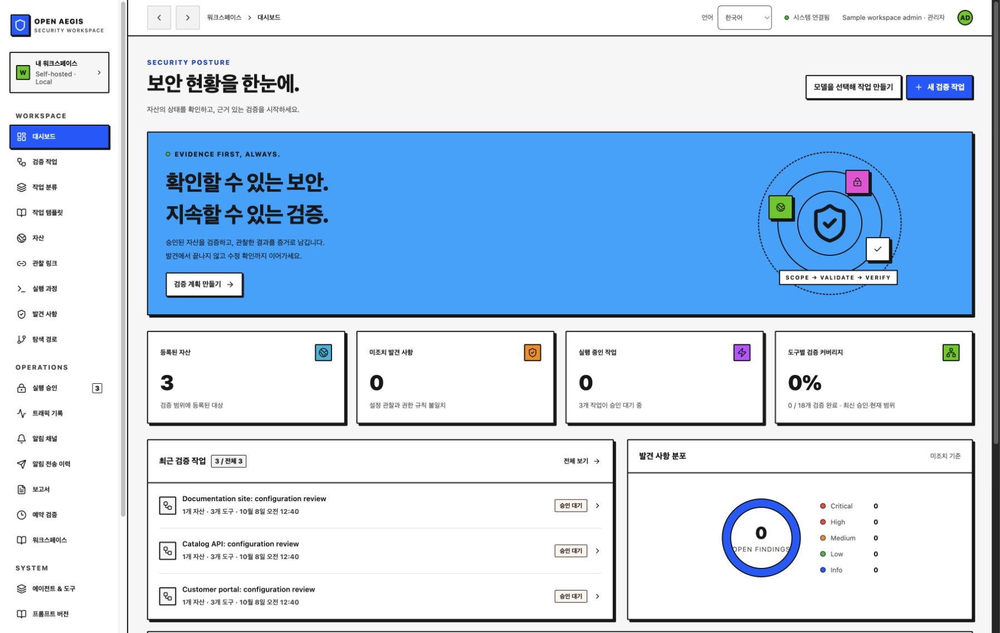

소유한 자산에서 시작하세요.
자산, 담당자, 태그와 명시적 API 접근 기대값을 등록하세요. 각 계획은 검증 범위와 실행 한도를 포착합니다.
직접 설치 · MIT · 오픈소스
무엇을 검사했는지 확인하고,
실행을 검토하고, 수정의 근거를
남기세요.
소유한 자산, 검토한 계획, 발견 사항과 독립 재검증을 하나의 흐름으로 연결하는 보안 검증 워크스페이스.
현재 버전: 1.0.0 · 셀프 호스팅 보안 검증
사용 흐름

임시 샘플 자산과 실행 전 계획을 표시한 실제 콘솔 화면입니다. 이 페이지는 프로젝트 소개이며, 애플리케이션을 설치하면 자신의 워크스페이스를 사용할 수 있습니다.
검토 → 실행 → 재검증
검증할 질문부터 실제 검사, 결과와 다음 결정까지 연결하세요.
자산, 담당자, 태그와 명시적 API 접근 기대값을 등록하세요. 각 계획은 검증 범위와 실행 한도를 포착합니다.
계획을 검토하고 실행을 별도로 승인하세요. 목표 분해와 결과 기반 후속 계획은 새로운 결정을 위한 제안을 준비합니다.
검사 범위, 발견 사항, 트래픽 메타데이터, Worker 진행과 감사 기록을 추적하세요. 근거를 Markdown, CSV와 JSON으로 내보낼 수 있습니다.
조치 내용을 기록하고 별도로 승인한 재검증을 실행하세요. 원래 근거와 새 결과를 함께 보존합니다.
하나의 공유 워크스페이스
HTTP 헤더, HTTPS/HSTS, 인증서 만료, 쿠키 속성, CORS, 범위 안의 링크와 운영자가 정의한 GET API 접근 기대값을 검사합니다.
규칙 계획, 선택적 AI 순서·목표 초안, 선언한 Worker 의존 단계, 공유 할 일과 검토하는 후속 계획을 연결합니다.
버전이 있는 템플릿, 작업 분류, 아카이브, 예약, 노트와 전송 이력을 보존하는 고정 webhook 알림을 제공합니다.
OpenAI·Claude 연동, 고정 수신처 모델 프로필, 작업 생성 시 계획·대화 모델 선택, 모델 목록 조회, 연결 시험과 미확인 요청 복구를 제공합니다.
ScopeSentry 가져오기를 검토한 뒤 자산에 반영합니다. stdio MCP로 기존 기록을 조회하고 범위가 있는 원격 GET 실행은 별도로 검토합니다.
SQLite 또는 네이티브 PostgreSQL, 백업·복원 명령, 감사 체크포인트와 관리자·운영자·조회자 역할을 제공합니다.
직접 설치하고 운영하세요
Python 3.11+와 Node.js 22, npm을 준비한 뒤 터미널에서 다음 명령을 실행하세요.
빌드된 콘솔이 포함된 서명된 배포 파일 설치 안내 ↗도 제공합니다. 배포 파일로 설치하면 Node.js가 필요 없습니다.
http://127.0.0.1:8787을 열고 12자 이상의 관리자
비밀번호를 설정하세요. 소스 콘솔은 영어로 시작하며 한국어 전환을 지원합니다. v1.0.0 배포 묶음은 이전 한국어 콘솔을 포함합니다.
git clone https://github.com/SoonGwan/open-aegis.git
cd open-aegis
./start.sh시작 스크립트가 잠긴 런타임 의존성을 설치하고 콘솔을 빌드합니다.
공개적으로 만드는 프로젝트
Open Aegis는 ARTEX의 공개 기능 구성을 참고하여 독립적으로 작성했습니다. ARTEX 코드를 복사하거나 포크하지 않았습니다.
문서에 명시한 범위의 보안 검증을 제공합니다. ARTEX 전체 기능과의 동등성, 독립 보안 감사 완료, 모든 취약점 검출이나 운영 서비스 보장을 주장하지 않습니다.
시작하기 전에
전체 구현은 MIT 오픈소스입니다. 직접 설치하고 수정할 수 있습니다. 선택적으로 연결한 AI 제공자의 이용료와 자신의 서버 비용은 별도입니다.
이곳은 프로젝트 소개 페이지입니다. 애플리케이션을 자신의 환경에 설치한 뒤 자산과 기록을 직접 관리하세요.
소유하거나 검사 권한을 받은 자산의 HTTP·TLS·쿠키·CORS 설정과 운영자가 정의한 API 접근 기대값 등을 확인합니다. 실행 전 범위와 계획을 검토하고 별도로 승인합니다. 구현 범위 보기 ↗